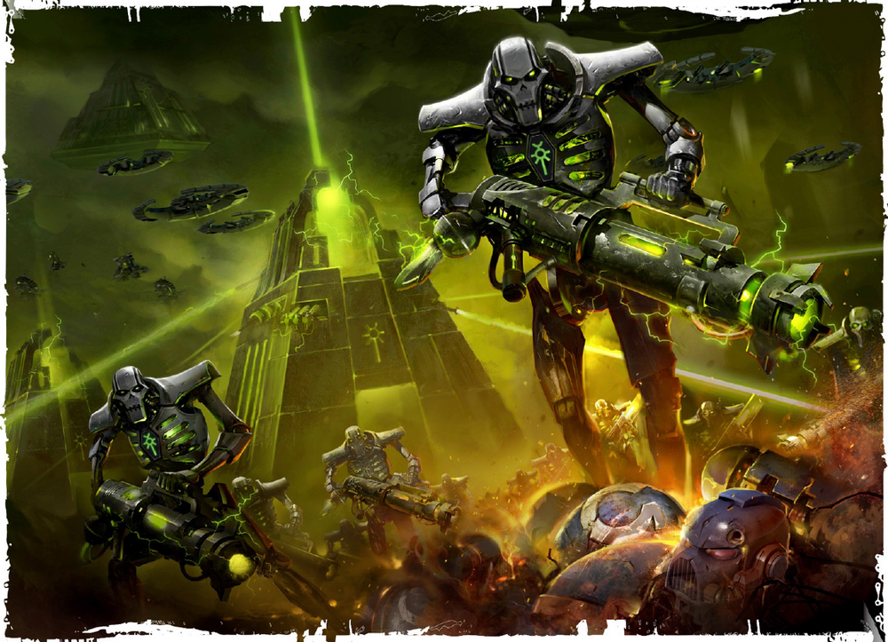
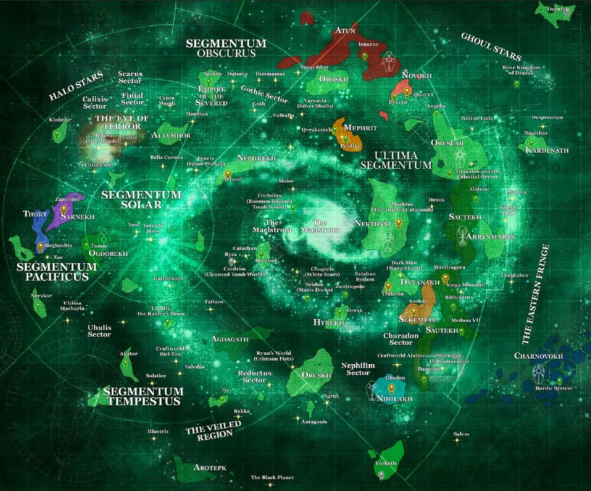

Hail, Inquisitor!
This pict view contains the summation of our archival data on the requested xenos filth. Should your Lordship need any further assistance, the Administratum stands ever ready. The Emperor protects!
<<<<<ORKS>>>>>
The green-skinned menace - given your work on Armaggedon - is one you are well acquitainted with. The origins of this species are unknown. The orks infect a planet through sporulation. Once these seeds are sown, it is nigh impossible to rid the planet completely of these creatures. Their baseline intelligence is neglible, offset by their strength and survivablity, which Magos Tawnfry has documented as well above human. All of the orks are rapidly increased as more of their number congregate in a given area. Hence, Militarum guidelines dictate that any green skin presence be kept to an aboslutel minimum at all times


<<<<<ÆLDARI>>>>>
These creatures known commonly as the Eldar view themselves as the true heirs of galactic dominion. Ancient texts, both human and xenos, indicate that this may have been true as recently as 15,000 years ago. The cause of their precipitous decline is a mystery with many conflicting accounts, agreeing only that it was the Eldar themselves that caused their fall. Superficially, they are similar to humans in most regards. Their reflexes and lifespans dwarf all but the Emperor’s Angels. They also have an uncanny attunement to the powers of the witch. Unaugmented, their bodies are below that of a baseline human in terms of resilience and strength.


<<<<<NECRONS>>>>>
A more resilient foe would be hard to find. The cadaverous forms of their warriors push forward regardless of losses and can withstand damage that should destroy them. They wield the most abominable of technologies, necessitating a wary eye being kept on all Tech Priests operating within an area of known Necron activity. Their tomb fortresses have been observed throughout the galaxy, often buried within the planet they occupy. Small comfort may be taken in that they inert until disturbed.

<<<<<TYRANID>>>>>
Diminutively called “the bugs: by most Guardsmen, the Tyranids are a super-organism comprised of countless creatures and forms which seem to share a consciousness. The first encounter is documented in the 741.M41 on the Eastern Fringes, emerging from extra galactic space. They consume all biomass from any planet they invade, leaving behind only barren planets devoid of even most mineral wealth. These early encounters seem to have been intelligence gathering, as more recent attacks are more aware of our capabilities.